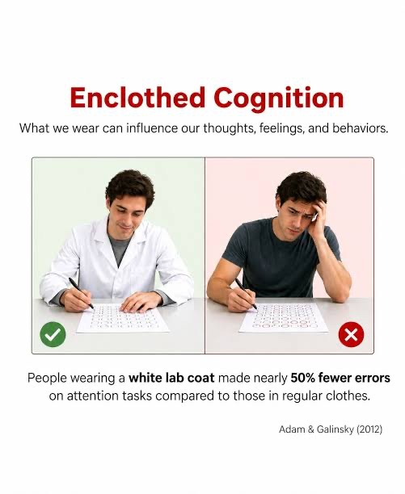

Fashion and Identity-Building: Enclothed Cognition

Recently, I was introduced to the world of “fashion girls” and “sorority girls.” Fashion is defined as a way of dressing, behaving, writing, or performing that is favored at one time and/or place. To be considered “fashionable,” one is conforming to the custom, style, or established mode of that time and/or place.
What I noticed is that these two groups seem to use fashion in vastly different ways. On campus, sorority girls often dress alike to create group unity and a sense of belonging, almost like a code for harmony. Fashion girls, on the other hand, seem to use clothing to feel out who they are as individuals. Both methods demonstrate the instrumental psychological nature that clothes have beyond their practical, everyday use. In an individualistic culture such as that of the US, is being unique normal?
I enjoy watching the YouTuber Cody Ko, and he reviewed the unique 2000s show called “Beauty and the Geek.” It’s actually a great show; you should check it out. On the show in Season 1, they paired 7 male “geeks” with 7 female “beauties” to help one another become more well-rounded. The men had to study many topics that were not their forté, including giving massages, planning dates, getting women’s digits, and learning the names of pop songs and magazines. The women were tested on other unfamiliar topics: rocket science, math, modern politics, camping, and car maintenance. While these contrasting battles were a bit gender-stereotyped, I actually resonated with the topics that the men claimed to have mastered a bit more. And in watching the show, I discovered how much some women like to invest in being highly feminine. Here, we’ll define feminine as qualities commonly attributed to women by the given larger society.
When I looked further into the phenomenon of fashion girls, it opened up a whole new world for me. Since I don’t use TikTok, I lived under a rock, and therefore had no idea that there are hundreds of different subcategories of styles, as caused by the fast fashion industry. These subcategories are supposed to help one in cultivating one’s identity, much like how many confused teenagers tried on multiple genders for a year in high school during the pandemic.
The transience of clothing, both in one’s closet and on one’s mind, was fascinating to me, as they had physically projected their mental states upon cloth draped or tied onto themselves.
As it turns out, there is a name for this phenomenon: “enclothed cognition.” It is defined as the influence that clothes have on the wearer’s psychological processes. In a 2012 study, participants who wore a white coat described as a doctor’s coat performed better on attention tasks than those who were told it was a painter’s coat (Adam & Galinsky, 2012). Perhaps the fashion girls were onto something after all.

This physical manifestation of emotion, self, and identity seemed to have been deeply analyzed and pondered upon by these women. I would estimate some fashion girls spend over 10–20 hours a week thinking about fashion. I also noticed that many pieces/dresses were well over $250–300, before shipping. And the shops were mostly online, so you needed to know your size and hope for the best about the quality of the cloth.
In the end, I decided that I was not a fashion girl, as the ROI of thinking about fashion for identity development was just too imbalanced for me. But learning about this world of fashion had taught me a lot and opened up a new one for me.
To tie back to the TV show, “Beauty and the Geek,” I do see the great value in counterbalancing your own quirks with something foreign every once in a while, but it does not need to be a daily practice. As for me, I learned from my research for this topic that I can explore and discover my uniqueness and individuality while lounging on the dining hall couch in yoga pants and a tank top, fashionless but thriving.
References
Adam, H., & Galinsky, A. D. (2012). Enclothed cognition. Journal of Experimental Social Psychology, 48(4), 918–925. https://doi.org/10.1016/j.jesp.2012.02.008